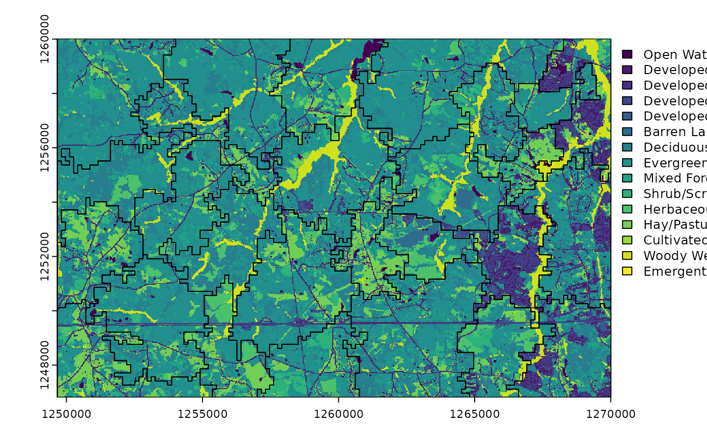
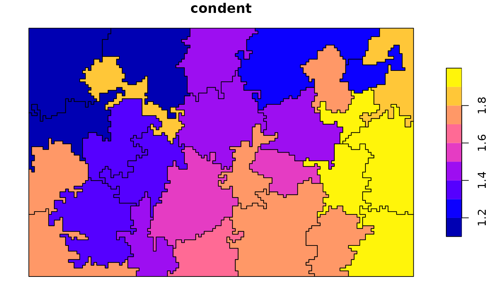
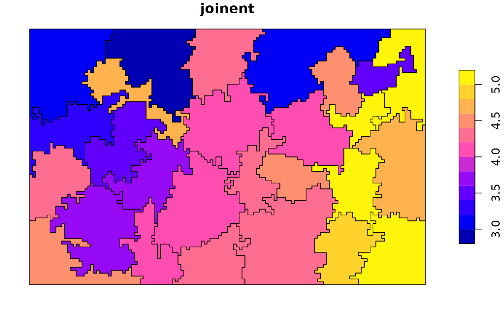

Calculating landscape metrics for irregular areas
2023-09-28
Source:vignettes/articles/irregular_areas.Rmd
irregular_areas.RmdLandscape metrics are quantitative measures that describe the composition and configuration of a landscape. In this vignette, we will use the R package landscapemetrics to calculate landscape metrics for irregular areas.
To get started, we first need to install and attach the required R packages. We will use landscapemetrics, sf, terra, and tidyr in this example:
Next, we need to read in our example data. In this case, we will use the Augusta NLCD dataset and an example set of irregular polygons provided by the landscapemetrics package:
# read example data ----------------------------------------------------
augusta_nlcd = rast(landscapemetrics::augusta_nlcd)
irregular_areas <- landscapemetrics:::internal_data$irregular_areas
plot(augusta_nlcd, type = "classes")
plot(st_geometry(irregular_areas), add = TRUE)
In the code above, we read in the Augusta NLCD dataset as a raster
object and the example irregular polygons as an sf object.
We then plot both of these objects together to visualize our data.
We can calculate landscape metrics for the whole
landscape using the calculate_lsm() function:
# calculate lsm for the whole landscape -----------------------------------
all_landscape = calculate_lsm(augusta_nlcd, what = c("lsm_l_ent", "lsm_l_condent",
"lsm_l_mutinf", "lsm_l_joinent",
"lsm_l_relmutinf"))
all_landscape## # A tibble: 5 × 6
## layer level class id metric value
## <int> <chr> <int> <int> <chr> <dbl>
## 1 1 landscape NA NA condent 1.63
## 2 1 landscape NA NA ent 2.88
## 3 1 landscape NA NA joinent 4.51
## 4 1 landscape NA NA mutinf 1.24
## 5 1 landscape NA NA relmutinf 0.432Here, we specify the what argument to calculate a set of
landscape metrics that include entropy, conditional entropy, mutual
information, joint entropy, and relative mutual information. We store
the calculated landscape metrics in the all_landscape
object.
On the other hand, we can also calculate landscape metrics for
irregular polygons using the sample_lsm() function:
# calculate lsm for irregular polygons ------------------------------------
irr_landscapes = sample_lsm(augusta_nlcd, irregular_areas,
what = c("lsm_l_ent", "lsm_l_condent",
"lsm_l_mutinf", "lsm_l_joinent",
"lsm_l_relmutinf"))
irr_landscapes## # A tibble: 135 × 8
## layer level class id metric value plot_id percentage_inside
## <int> <chr> <int> <int> <chr> <dbl> <int> <dbl>
## 1 1 landscape NA NA condent 1.17 1 102.
## 2 1 landscape NA NA ent 1.93 1 102.
## 3 1 landscape NA NA joinent 3.10 1 102.
## 4 1 landscape NA NA mutinf 0.757 1 102.
## 5 1 landscape NA NA relmutinf 0.393 1 102.
## 6 1 landscape NA NA condent 1.19 2 105.
## 7 1 landscape NA NA ent 2.18 2 105.
## 8 1 landscape NA NA joinent 3.37 2 105.
## 9 1 landscape NA NA mutinf 0.984 2 105.
## 10 1 landscape NA NA relmutinf 0.452 2 105.
## # ℹ 125 more rowsHere, we use the sample_lsm() function to calculate the
same set of landscape metrics for our example set of irregular polygons.
We store the results in the irr_landscapes object.
We can connect the calculated landscape metric values to our original
polygons using the pivot_wider() function:
# connect values to polygons ----------------------------------------------
irr_landscapes_w = pivot_wider(irr_landscapes,
id_cols = plot_id,
names_from = metric,
values_from = value)
irregular_areas = cbind(irregular_areas, irr_landscapes_w)Here, we pivot the irr_landscapes object from a long
format to a wide format using the pivot_wider() function.
We specify the id_cols, names_from, and
values_from arguments to connect the calculated landscape
metric values to our original polygons. We then add the calculated
landscape metrics as columns to our original
irregular_areas object using cbind().
Finally, we can visualize the calculated landscape metrics using the
plot() function:
# viz results -------------------------------------------------------------
plot(irregular_areas["ent"])
plot(irregular_areas["condent"])
plot(irregular_areas["mutinf"])
plot(irregular_areas["joinent"])
plot(irregular_areas["relmutinf"])